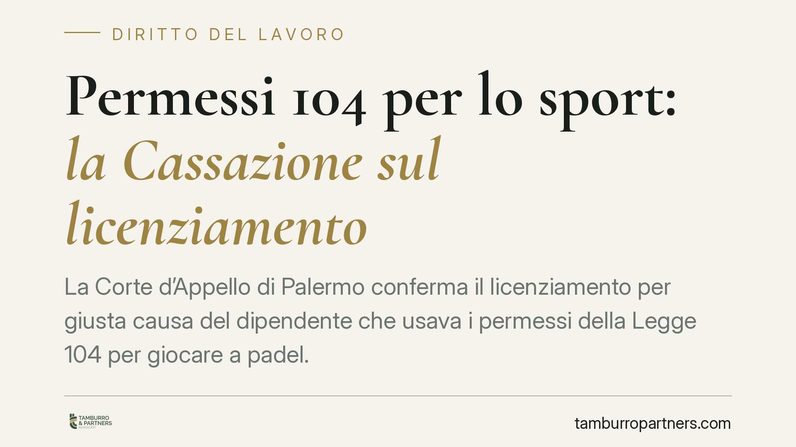

Permessi 104 per lo sport: la Cassazione sul licenziamento
La Corte d'Appello di Palermo conferma il licenziamento per giusta causa del dipendente che usava i permessi della Legge 104 per giocare a padel. La decisione legittima il controllo investigativo in luoghi pubblici e definisce i confini dell'abuso del diritto. Un tema che riguarda sia i lavoratori titolari dei permessi sia i datori che intendono verificarne l'uso.

Il caso
Un lavoratore fruiva dei permessi mensili retribuiti previsti dalla Legge 104/1992 per l'assistenza a un familiare disabile. Durante quelle ore, però, si dedicava ad attività sportiva. L'azienda, insospettita, incaricava un'agenzia investigativa che documentava la condotta. Ne seguiva il licenziamento per giusta causa, confermato dalla Corte d'Appello di Palermo con sentenza n. 426/2026.
La pronuncia tocca tre nodi ricorrenti nel contenzioso di lavoro: la natura del permesso ex art. 33 L. 104/1992, la legittimità del controllo tramite investigatore privato e il potere del giudice di correggere la formulazione delle prove.
Inquadramento normativo
L'art. 33 della L. 104/1992 riconosce al lavoratore tre giorni mensili di permesso retribuito per assistere un familiare con handicap in situazione di gravità. La finalità è vincolata: il tempo deve essere destinato all'assistenza, non alla libera disponibilità del dipendente. L'uso del permesso per scopi personali estranei all'assistenza integra un abuso del diritto e costituisce, al contempo, una truffa ai danni dell'ente previdenziale che eroga l'indennità e una grave violazione dei doveri di correttezza e buona fede verso il datore.
Sul fronte dei controlli, gli artt. 2 e 3 dello Statuto dei lavoratori (L. 300/1970) vietano la vigilanza sull'attività lavorativa tramite guardie giurate o personale addetto. La giurisprudenza, però, ammette il ricorso all'investigatore privato quando l'indagine non riguarda l'adempimento della prestazione in azienda, ma condotte extralavorative potenzialmente illecite. Chi fruisce del permesso e lo impiega altrove non sta "lavorando": l'accertamento in luogo pubblico resta quindi legittimo.
La Corte ha inoltre richiamato l'art. 421 c.p.c., che attribuisce al giudice del lavoro poteri istruttori d'ufficio. Su questa base è stata ammessa la riformulazione dei capitoli di prova proposti dall'azienda, in funzione di una più compiuta ricostruzione dei fatti.
Implicazioni pratiche
Per il lavoratore il messaggio è netto: il permesso ex L. 104 non è un giorno di libertà. Il nesso con l'assistenza deve esistere ed essere, almeno potenzialmente, verificabile. Non occorre una presenza continuativa minuto per minuto accanto al familiare, ma l'impiego sistematico del tempo in attività del tutto scollegate dall'assistenza espone al licenziamento per giusta causa, cioè senza preavviso.
Per il datore di lavoro la sentenza conferma uno strumento di tutela, ma con limiti precisi. Il controllo investigativo è ammesso solo per verificare condotte extralavorative e fuori dall'orario di prestazione; non può trasformarsi in sorveglianza generalizzata sull'attività aziendale, che resta vietata.
Va ricordato che la giusta causa richiede sempre una valutazione di proporzionalità: la gravità del fatto deve essere tale da ledere in modo irreparabile il vincolo fiduciario. L'abuso reiterato dei permessi integra, secondo la giurisprudenza consolidata, questa soglia.
Cosa fare in concreto
- Lavoratore: usa i permessi ex L. 104 in coerenza con la loro finalità assistenziale e conserva, ove possibile, elementi che documentino l'assistenza prestata.
- Lavoratore: valuta che un'interpretazione "estensiva" del permesso — anche solo per commissioni personali abituali — può essere contestata come abuso.
- Datore di lavoro: prima di avviare un controllo investigativo, verifica che riguardi condotte fuori dall'orario e dalla sede di lavoro, documentando il fondato sospetto.
- Datore di lavoro: motiva la contestazione disciplinare in modo circostanziato, indicando date, luoghi e condotte accertate, e rispetta le garanzie dell'art. 7 St. lav.
- Entrambi: in caso di contenzioso, considera che il giudice del lavoro può integrare l'istruttoria d'ufficio ex art. 421 c.p.c.; la strategia probatoria va impostata con cura fin dall'inizio.
Un chiarimento necessario
La decisione non stigmatizza chi fruisce legittimamente dei permessi, strumento essenziale per migliaia di famiglie. Colpisce l'abuso, che danneggia tanto il datore quanto l'intero sistema di tutela. Distinguere tra uso corretto e distorsione resta, come sempre, una questione di fatto da valutare caso per caso.
---
*Contributo informativo a cura di Tamburro & Partners - Avv. Giuseppe Tamburro. Non costituisce parere legale.*
Ogni storia di lavoro ha i suoi tempi.
Se gestisci HR e vuoi un confronto su contenzioso, ispezioni o licenziamenti, scrivi allo studio. Ti rispondiamo entro un giorno lavorativo.